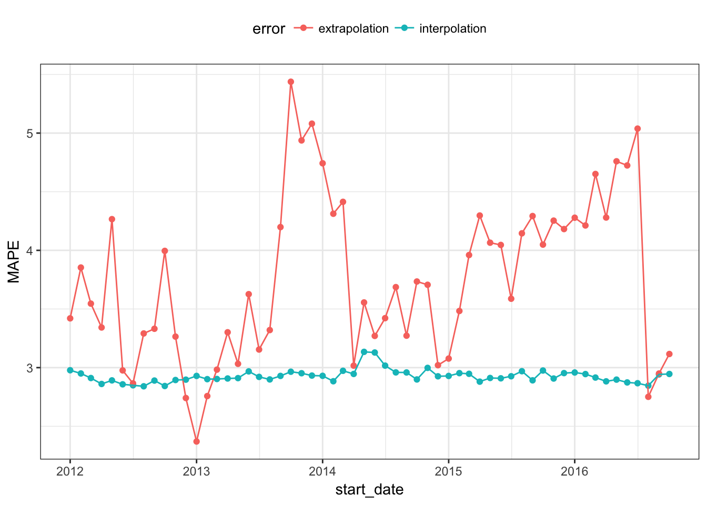

Time_Series.Rmd“Demo Week: Tidy Forecasting with sweep” is an excellent article that uses tidy methods with time series. This article uses their analysis with rsample to get performance estimates for future observations using rolling forecast origin resampling.
The data are sales of alcoholic beverages and can be found at the Federal Reserve Back of St. Louis website. From this page, download the csv file. readr is used to bring in the data:
col_spec <- cols(
DATE = col_date(format = ""),
S4248SM144NCEN = col_double()
)
library(readr)
drinks <- read_csv("S4248SM144NCEN.csv", col_types = col_spec)
str(drinks, give.att = FALSE)## Classes 'tbl_df', 'tbl' and 'data.frame': 309 obs. of 2 variables:
## $ DATE : Date, format: "1992-01-01" "1992-02-01" ...
## $ S4248SM144NCEN: num 3459 3458 4002 4564 4221 ...Each row is a month of sales (in millions of US dollars).
Suppose that predictions for one year ahead were needed and the model should use the most recent data from the last 20 years. To setup this resampling scheme:
library(rsample)
roll_rs <- rolling_origin(
drinks,
initial = 12 * 20,
assess = 12,
cumulative = FALSE
)
nrow(roll_rs)## [1] 58## # Rolling origin forecast resampling
## # A tibble: 58 x 2
## splits id
## <list> <chr>
## 1 <S3: rsplit> Slice01
## 2 <S3: rsplit> Slice02
## 3 <S3: rsplit> Slice03
## 4 <S3: rsplit> Slice04
## 5 <S3: rsplit> Slice05
## 6 <S3: rsplit> Slice06
## 7 <S3: rsplit> Slice07
## 8 <S3: rsplit> Slice08
## 9 <S3: rsplit> Slice09
## 10 <S3: rsplit> Slice10
## # ... with 48 more rowsEach split element contains the information about that resample:
## <240/12/309>For plotting, let’s index each split by the first day of the assessment set:
get_date <- function(x)
min(assessment(x)$DATE)
start_date <- map(roll_rs$splits, get_date)
roll_rs$start_date <- do.call("c", start_date)
head(roll_rs$start_date)## [1] "2012-01-01" "2012-02-01" "2012-03-01" "2012-04-01" "2012-05-01"
## [6] "2012-06-01"This resampling scheme has 58 splits of the data so that there will be 58 ARIMA models that are fit. To create the models, the auto.arima function from the forecast package is used. The functions analysis and assessment return the data frame, so another step converts the data in to a ts object called mod_dat using a function in the timetk package.
library(forecast) # for `auto.arima`
library(timetk) # for `tk_ts`
library(zoo) # for `as.yearmon`
fit_model <- function(x, ...) {
# suggested by Matt Dancho:
x %>%
analysis() %>%
# Since the first day changes over resamples, adjust it
# based on the first date value in the data frame
tk_ts(start = .$DATE[[1]] %>% as.yearmon(),
freq = 12,
silent = TRUE) %>%
auto.arima(...)
}Each model is saved in a new column:
## Series: .
## ARIMA(2,1,2)(2,1,1)[12]
##
## Coefficients:
## ar1 ar2 ma1 ma2 sar1 sar2 sma1
## -0.994 -0.502 0.024 -0.414 0.404 -0.334 -0.554
## s.e. 0.106 0.081 0.111 0.125 0.100 0.076 0.083
##
## sigma^2 estimated as 71948: log likelihood=-1591
## AIC=3199 AICc=3199 BIC=3226(There are some warnings produced by these first regarding extra columns in the data that can be ignored)
Using the model fits, performance will be measured in two ways:
In each case, the mean absolute percent error (MAPE) is the statistic used to characterize the model fits. The interpolation error can be computed from the Arima object. to make things easy, the sweep package’s sw_glance function is used:
library(sweep)
roll_rs$interpolation <- map_dbl(
roll_rs$arima,
function(x)
sw_glance(x)[["MAPE"]]
)
summary(roll_rs$interpolation)## Min. 1st Qu. Median Mean 3rd Qu. Max.
## 2.84 2.90 2.92 2.93 2.95 3.13For the extrapolation error, the model and split objects are required. Using these:
library(dplyr)
get_extrap <- function(split, mod) {
n <- nrow(assessment(split))
# Get assessment data
pred_dat <- assessment(split) %>%
mutate(
pred = as.vector(forecast(mod, h = n)$mean),
pct_error = ( S4248SM144NCEN - pred ) / S4248SM144NCEN * 100
)
mean(abs(pred_dat$pct_error))
}
roll_rs$extrapolation <-
map2_dbl(roll_rs$splits, roll_rs$arima, get_extrap)
summary(roll_rs$extrapolation)## Min. 1st Qu. Median Mean 3rd Qu. Max.
## 2.37 3.27 3.66 3.75 4.26 5.44What do these error estimates look like over time?
library(ggplot2)
library(tidyr)
roll_rs %>%
select(interpolation, extrapolation, start_date) %>%
as.data.frame %>%
gather(error, MAPE, -start_date) %>%
ggplot(aes(x = start_date, y = MAPE, col = error)) +
geom_point() +
geom_line() +
theme_bw() +
theme(legend.position = "top")
It is likely that the interpolation error is an underestimate to some degree.
{kind=link}